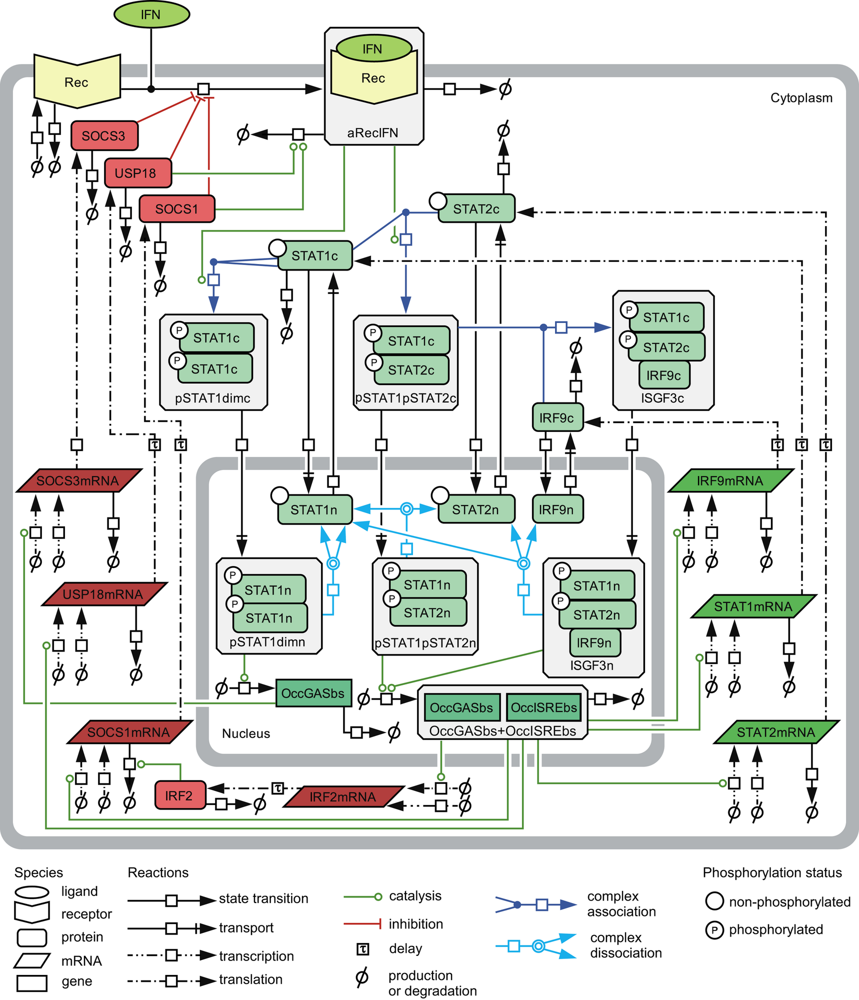
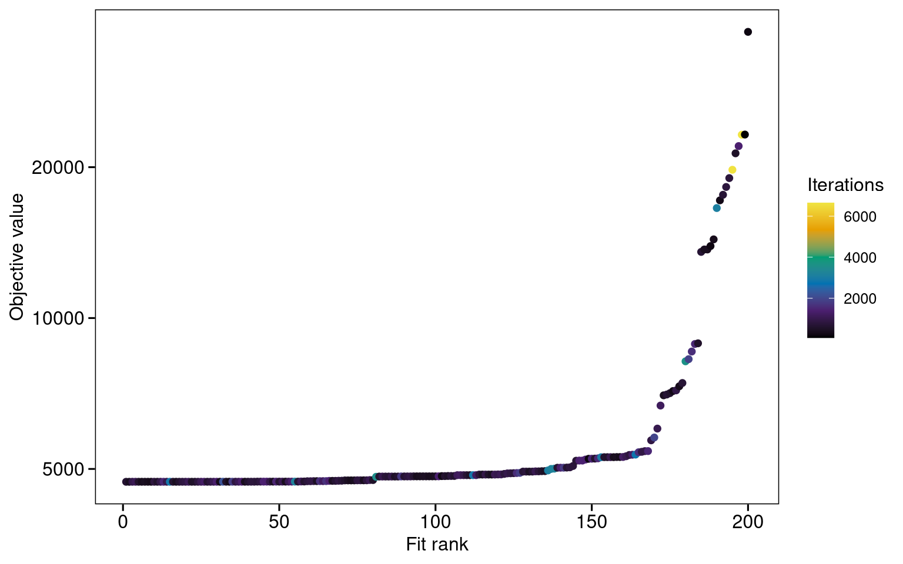
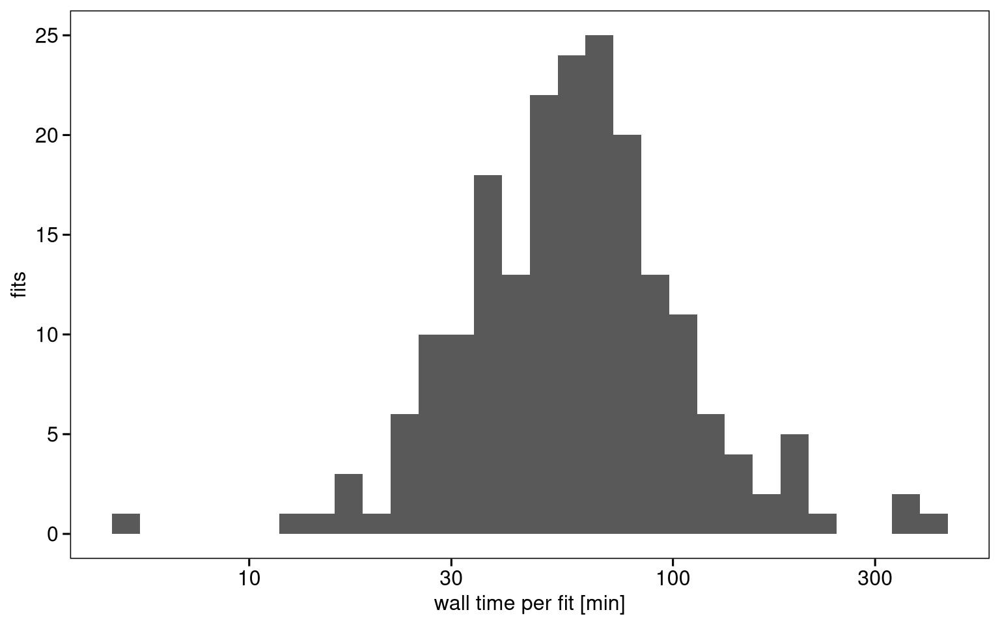
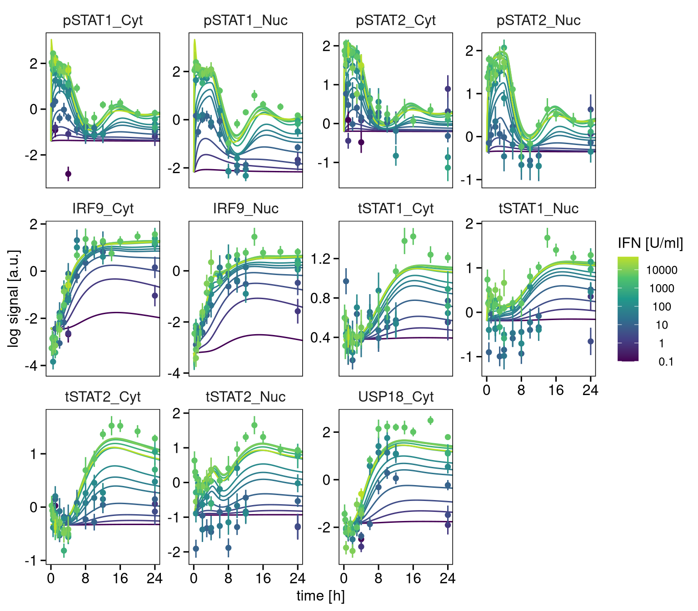
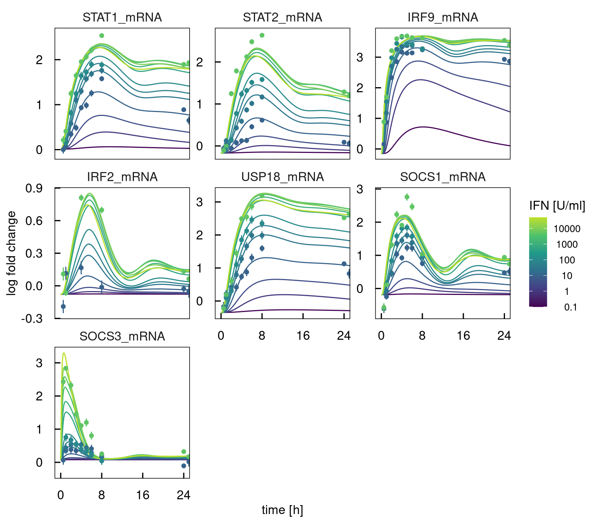
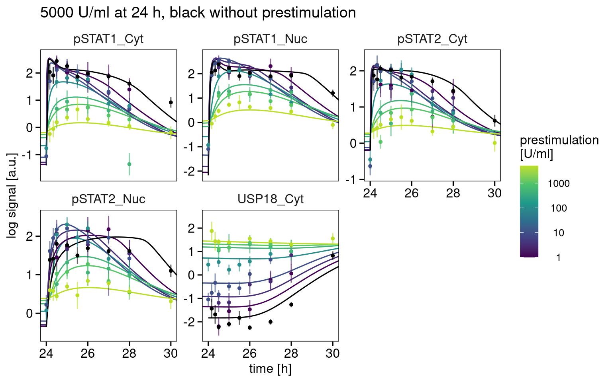
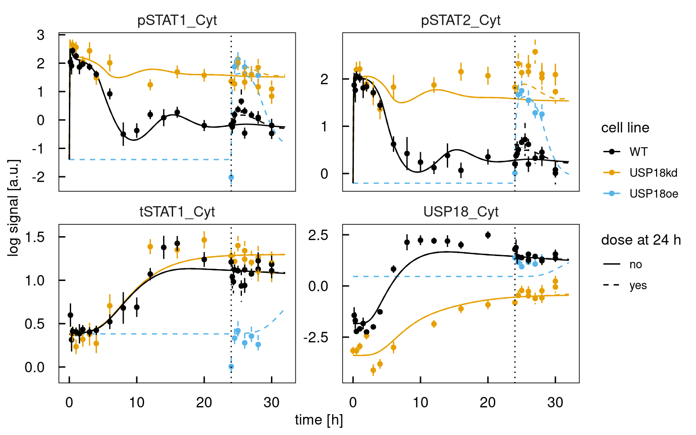
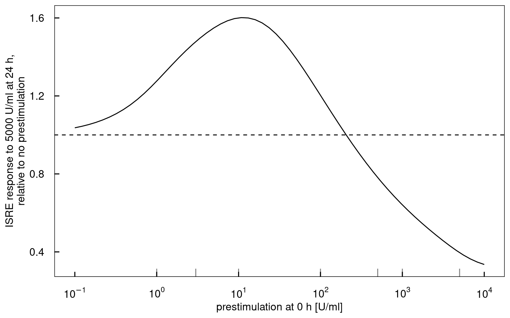

[1] TRUE TRUE TRUE TRUE TRUE TRUE TRUE TRUE
Shows: eventlist(), symmetryDetection(),
normL2(), mstrust(),
distributedComputing(), slurmCluster(),
plotCombined().
IFN-alpha sensitization in Huh7.5 cells after Kok et al. (2020), Mol Syst Biol 16:e8955: model, structural identifiability, forward and reverse gradient, a multistart of 200 fits around the published optimum and the fit at the optimum.
Run
With this folder as working directory:
source("analysis.R").
library(dMod2)
library(ggplot2)
.modelname <- "kok"
dir.create("build", showWarnings = FALSE)
# generated sources and shared objects in build/, reused when nothing changed
options(dMod2.outdir = "build")
.cores <- detectFreeCores()
.extDir <- system.file("extdata", "kok", package = "dMod2")Data
Immunoblots and qPCR are fitted on the natural log, molecules per
cell (mc_*) on the linear scale. A condition is named
<experiment>_<ifn1>_<ifn2>, by the IFN
doses in U/ml at 0 h and at 24 h.
data(kok)
mydataL <- as.datalist(kok, splitBy = "condition",
keepCovariates = c("experiment", "ifn1", "ifn2"))
cond.grid <- covariates(mydataL)
cat(sprintf("%d points, %d conditions, %d observables\n", nrow(kok),
length(mydataL), length(unique(kok$name))))#> 1918 points, 25 conditions, 22 observablesModel
The model scheme, Figure 2 of Kok et al. (2020) doi:10.15252/msb.20198955, published under CC BY 4.0.

Newly made STAT1, STAT2, IRF9, USP18 and SOCS1 pass a linear chain before they act, which delays the feedback without a delay differential equation.
.chain <- function(eq, protein, n, synthesis, to) {
st <- paste0(protein, "_LC_", seq_len(n))
eq <- addReaction(eq, "", st[1], synthesis, paste(protein, "translation"))
for (i in seq_len(n - 1))
eq <- addReaction(eq, st[i], st[i + 1], sprintf("delay%s*%s", protein, st[i]))
addReaction(eq, st[n], to, sprintf("delay%s*%s", protein, st[n]),
paste(protein, "maturation"))
}
# a transcript with basal synthesis, induction by an occupied binding site, decay
.mRNA <- function(eq, gene, induction, decay = sprintf("hl%smRNA*%smRNA", gene, gene)) {
m <- paste0(gene, "mRNA")
eq |>
addReaction("", m, sprintf("synth%sbasal", m), paste(gene, "basal transcription")) |>
addReaction("", m, induction, paste(gene, "induced transcription")) |>
addReaction(m, "", decay, paste(gene, "mRNA decay"))
}
.receptor <- "(1 + kinhBySOCS*SOCS1)*(1 + kinhByUSP18*USP18)*SOCS3"
reactions <- eqnlist() |>
# receptor turnover and IFN binding, inhibited by SOCS1, USP18 and SOCS3
addReaction("", "Rec", "prodRec", "receptor synthesis") |>
addReaction("Rec", "", "degRec*Rec", "receptor degradation") |>
addReaction("Rec", "", "degRecBySOCS*Rec*SOCS1", "receptor degradation by SOCS1") |>
addReaction("IFN + Rec", "aRecIFN", paste0("BindIFN*IFN*Rec/(", .receptor, ")"),
"IFN binding") |>
addReaction("aRecIFN", "", "degaRecIFN*aRecIFN", "active receptor degradation") |>
addReaction("aRecIFN", "", "degaRecIFNBySOCS*aRecIFN*SOCS1", "by SOCS1") |>
addReaction("aRecIFN", "", "degByUSP18*aRecIFN*USP18", "by USP18") |>
addReaction("aRecIFN", "", "degBySOCSandUSP18*aRecIFN*SOCS1*USP18",
"by SOCS1 and USP18") |>
# the active receptor phosphorylates STAT1/STAT2 heterodimers and STAT1 homodimers
addReaction("STAT1c + STAT2c", "pSTAT1pSTAT2c",
"ComplFormSTAT1STAT2c*aRecIFN*STAT1c*STAT2c", "heterodimer formation") |>
addReaction("pSTAT1pSTAT2c", "pSTAT1pSTAT2n", "TrLocSTAT1STAT2c*pSTAT1pSTAT2c",
"heterodimer import") |>
addReaction("pSTAT1pSTAT2n", "STAT1n + STAT2n", "decaySTAT1STAT2n*pSTAT1pSTAT2n",
"heterodimer dephosphorylation") |>
addReaction("pSTAT1pSTAT2c + IRF9c", "ISGF3c", "BindIRF9c*pSTAT1pSTAT2c*IRF9c",
"ISGF3 formation") |>
addReaction("ISGF3c", "ISGF3n", "TrLocISGF3c*ISGF3c", "ISGF3 import") |>
addReaction("ISGF3n", "STAT1n + STAT2n + IRF9n", "decayISGF3n*ISGF3n",
"ISGF3 dissociation") |>
addReaction("2*STAT1c", "pSTAT1dimc", "ComplFormSTAT1dimc*aRecIFN*STAT1c^2",
"homodimer formation") |>
addReaction("pSTAT1dimc", "pSTAT1dimn", "TrLocSTAT1dimc*pSTAT1dimc", "homodimer import") |>
addReaction("pSTAT1dimn", "2*STAT1n", "decaySTAT1dimn*pSTAT1dimn",
"homodimer dephosphorylation") |>
# occupancy of ISRE and GAS promoter sites
addReaction("", "OccISREbs", "genOccISREbsByISGF3n*ISGF3n", "ISRE occupied by ISGF3") |>
addReaction("", "OccISREbs", "genOccISREbsBySTAT1STAT2n*pSTAT1pSTAT2n",
"ISRE occupied by the heterodimer") |>
addReaction("OccISREbs", "", "hlOccISREbs*OccISREbs", "ISRE release") |>
addReaction("", "OccGASbs", "genOccGASbsBySTAT1dimn*pSTAT1dimn", "GAS occupied") |>
addReaction("OccGASbs", "", "hlOccGASbs*OccGASbs", "GAS release") |>
# unphosphorylated STATs and IRF9 shuttle between cytoplasm and nucleus
addReaction("STAT1c", "STAT1n", "TrLocSTAT1c*STAT1c", "STAT1 import") |>
addReaction("STAT1n", "STAT1c", "TrLocSTAT1n*STAT1n", "STAT1 export") |>
addReaction("STAT2c", "STAT2n", "TrLocSTAT2c*STAT2c", "STAT2 import") |>
addReaction("STAT2n", "STAT2c", "TrLocSTAT2n*STAT2n", "STAT2 export") |>
addReaction("IRF9c", "IRF9n", "TrLocIRF9c*IRF9c", "IRF9 import") |>
addReaction("IRF9n", "IRF9c", "TrLocIRF9n*IRF9n", "IRF9 export") |>
# target genes
.mRNA("STAT1", "synthSTAT1mRNA*OccISREbs/(kmSTAT1 + OccISREbs)") |>
.mRNA("STAT2", "synthSTAT2mRNA*OccISREbs") |>
.mRNA("IRF9", "synthIRF9mRNA*OccISREbs/(kmIRF9 + OccISREbs)") |>
.mRNA("USP18", "synthUSP18mRNA*OccISREbs") |>
.mRNA("SOCS1", "synthSOCS1mRNA*OccISREbs",
decay = "hlSOCS1mRNA*SOCS1mRNA*(1 + IRF2)") |>
.mRNA("SOCS3", "synthSOCS3mRNA*OccGASbs") |>
# IRF2 transcript is turned into protein rather than degraded
addReaction("", "IRF2mRNA", "synthIRF2mRNAbasal", "IRF2 basal transcription") |>
addReaction("", "IRF2mRNA", "synthIRF2mRNA*OccISREbs", "IRF2 induced transcription") |>
addReaction("IRF2mRNA", "IRF2", "delayIRF2*IRF2mRNA", "IRF2 translation") |>
addReaction("IRF2", "", "degIRF2*IRF2", "IRF2 degradation") |>
# feedback and pool proteins
.chain("STAT1", 3, "synthSTAT1*STAT1mRNA/(kmsynthSTAT1 + STAT1mRNA)", "STAT1c") |>
addReaction("STAT1c", "", "degSTAT1*STAT1c", "STAT1 degradation") |>
.chain("STAT2", 5, "synthSTAT2*STAT2mRNA", "STAT2c") |>
addReaction("STAT2c", "", "degSTAT2*STAT2c", "STAT2 degradation") |>
.chain("IRF9", 2, "synthIRF9*IRF9mRNA", "IRF9c") |>
addReaction("IRF9c", "", "degIRF9*IRF9c", "IRF9 degradation") |>
.chain("USP18", 2, "synthUSP18*USP18mRNA", "USP18") |>
addReaction("USP18", "", "degUSP18*USP18", "USP18 degradation") |>
.chain("SOCS1", 1, "synthSOCS1*SOCS1mRNA", "SOCS1") |>
addReaction("SOCS1", "", "degSOCS1*SOCS1", "SOCS1 degradation") |>
addReaction("", "SOCS3", "synthSOCS3*SOCS3mRNA", "SOCS3 translation") |>
addReaction("SOCS3", "", "degSOCS3*SOCS3", "SOCS3 degradation")IFN is added on top of what is left, at 0 h and at 24 h
doses <- eventlist(var = "IFN", time = c(0, 24), value = c("first", "second"),
method = "add")
.pSTAT1 <- c(Cyt = "ISGF3c + 2*pSTAT1dimc + pSTAT1pSTAT2c",
Nuc = "ISGF3n + 2*pSTAT1dimn + pSTAT1pSTAT2n")
.pSTAT2 <- c(Cyt = "ISGF3c + pSTAT1pSTAT2c", Nuc = "ISGF3n + pSTAT1pSTAT2n")
.IRF9 <- c(Cyt = "ISGF3c + IRF9c", Nuc = "ISGF3n + IRF9n")
.tSTAT1 <- paste(.pSTAT1, "+", c(Cyt = "STAT1c", Nuc = "STAT1n"))
.tSTAT2 <- paste(.pSTAT2, "+", c(Cyt = "STAT2c", Nuc = "STAT2n"))
names(.tSTAT1) <- names(.tSTAT2) <- c("Cyt", "Nuc")
.blot <- function(target, sum, loc)
sprintf("log(scale_%s_%s*(%s) + off_%s_%s)", target, loc, sum, target, loc)
observables <- do.call(eqnvec, c(
setNames(as.list(c(.blot("pSTAT1", .pSTAT1, names(.pSTAT1)),
.blot("pSTAT2", .pSTAT2, names(.pSTAT2)),
.blot("IRF9", .IRF9, names(.IRF9)),
.blot("tSTAT1", .tSTAT1, names(.tSTAT1)),
.blot("tSTAT2", .tSTAT2, names(.tSTAT2)))),
paste0(rep(c("pSTAT1", "pSTAT2", "IRF9", "tSTAT1", "tSTAT2"), each = 2),
"_", c("Cyt", "Nuc"))),
list(USP18_Cyt = "log(scale_USP18*USP18 + off_USP18)"),
# qPCR is normalized to the untreated level, so a transcript needs no scale
setNames(as.list(sprintf("log(%smRNA)",
c("STAT1", "STAT2", "IRF9", "IRF2", "USP18", "SOCS1", "SOCS3"))),
paste0(c("STAT1", "STAT2", "IRF9", "IRF2", "USP18", "SOCS1", "SOCS3"), "_mRNA")),
list(mc_STAT1 = paste(.tSTAT1, collapse = " + "),
mc_STAT2 = paste(.tSTAT2, collapse = " + "),
mc_IRF9 = paste(.IRF9, collapse = " + "),
mc_USP18 = "USP18")))Build
myOptions <- list(atol = 1e-8, rtol = 1e-6, maxsteps = 1e6L, maxattempts = 100L)
# model, observation and trafo also get the reverse sweep, see the gradient below
.modes <- c("forward", "reverse")
model <- odemodel(reactions, events = doses, modelname = "kok_ode",
derivMode = .modes, compile = FALSE)
x <- Xs(model, options = myOptions)
g <- Y(observables, x, modelname = "kok_obs", derivMode = .modes, compile = FALSE)Transformation
Every condition starts at the unstimulated steady state, solved in closed form. A rule is inserted before the rules that rewrite the symbols of the rule, so the right-hand sides end up in the estimated parameters only.
.complexes <- c("IFN", "aRecIFN", "pSTAT1pSTAT2c", "pSTAT1pSTAT2n", "ISGF3c",
"ISGF3n", "pSTAT1dimc", "pSTAT1dimn", "OccISREbs", "OccGASbs")
.chainOf <- function(protein, n) paste0(protein, "_LC_", seq_len(n))
trafo <- eqnvec() |>
define("x <- x", x = getParameters(model, g)) |>
define("x <- 0", x = .complexes) |>
# protein pools: synthesis balances degradation, the same flux passes each chain
insert("x <- STAT1c*degSTAT1/delaySTAT1", x = .chainOf("STAT1", 3)) |>
insert("x <- STAT2c*degSTAT2/delaySTAT2", x = .chainOf("STAT2", 5)) |>
insert("x <- IRF9c*degIRF9/delayIRF9", x = .chainOf("IRF9", 2)) |>
insert("x <- synthUSP18*USP18mRNA/delayUSP18", x = .chainOf("USP18", 2)) |>
insert("SOCS1_LC_1 <- synthSOCS1*SOCS1mRNA/delaySOCS1") |>
insert("synthSTAT1 <- STAT1c*degSTAT1/STAT1mRNA*(kmsynthSTAT1 + STAT1mRNA)") |>
insert("synthSTAT2 <- STAT2c*degSTAT2/STAT2mRNA") |>
insert("synthIRF9 <- IRF9c*degIRF9/IRF9mRNA") |>
insert("USP18 <- synthUSP18*USP18mRNA/degUSP18") |>
insert("prodRec <- Rec*(degRec + degRecBySOCS*SOCS1)") |>
insert("SOCS1 <- synthSOCS1*SOCS1mRNA/degSOCS1") |>
insert("SOCS3 <- synthSOCS3*SOCS3mRNA/degSOCS3") |>
insert("degIRF2 <- IRF2mRNA*delayIRF2/IRF2") |>
# transcripts at rest
insert("STAT1mRNA <- synthSTAT1mRNAbasal/hlSTAT1mRNA") |>
insert("STAT2mRNA <- synthSTAT2mRNAbasal/hlSTAT2mRNA") |>
insert("IRF9mRNA <- synthIRF9mRNAbasal/hlIRF9mRNA") |>
insert("USP18mRNA <- synthUSP18mRNAbasal/hlUSP18mRNA") |>
insert("SOCS3mRNA <- synthSOCS3mRNAbasal/hlSOCS3mRNA") |>
insert("SOCS1mRNA <- synthSOCS1mRNAbasal/(hlSOCS1mRNA*(1 + IRF2))") |>
insert("IRF2mRNA <- synthIRF2mRNAbasal/delayIRF2") |>
# nucleus to cytoplasm ratio at rest, the same for all shuttling proteins
insert("STAT1c <- totSTAT1/(1 + rCytNuc)") |>
insert("STAT1n <- totSTAT1*rCytNuc/(1 + rCytNuc)") |>
insert("STAT2c <- totSTAT2/(1 + rCytNuc)") |>
insert("STAT2n <- totSTAT2*rCytNuc/(1 + rCytNuc)") |>
insert("IRF9c <- totIRF9/(1 + rCytNuc)") |>
insert("IRF9n <- totIRF9*rCytNuc/(1 + rCytNuc)") |>
insert("TrLocSTAT1c <- TrLocSTAT1n*rCytNuc") |>
insert("TrLocSTAT2c <- TrLocSTAT2n*rCytNuc") |>
insert("TrLocIRF9c <- TrLocIRF9n*rCytNuc") |>
# observation scales and complex formation relative to the protein totals
insert("x <- x/totSTAT1", x = paste0("scale_tSTAT1_", c("Cyt", "Nuc"))) |>
insert("x <- x/totSTAT2", x = c(paste0("scale_tSTAT2_", c("Cyt", "Nuc")),
"ComplFormSTAT1dimc")) |>
insert("x <- x/totIRF9", x = paste0("scale_", c("pSTAT1", "pSTAT2", "IRF9"),
rep(c("_Cyt", "_Nuc"), each = 3))) |>
insert("totSTAT1 <- 4e5*totSTAT1") |>
insert("totSTAT2 <- 2.5e4*(1 + totSTAT2)") |>
insert("totIRF9 <- 500*(1 + totIRF9)") |>
insert("Rec <- 100*Rec") |>
insert("synthUSP18 <- 1000*synthUSP18")Per condition: the USP18 knock-down lowers every USP18 synthesis, doxycycline raises the basal one, and the two doses come from the covariates, 10 model units per U/ml.
trafo <- trafo |>
branch(table = cond.grid) |>
insert("x <- x/x_inh", experiment == "USP18kd",
x = c("synthUSP18mRNA", "synthUSP18", "synthUSP18mRNAbasal")) |>
insert("x <- x*x_OE", experiment == "USP18oe", x = "synthUSP18mRNAbasal") |>
insert("first <- dose", dose = 10*ifn1) |>
insert("second <- dose", dose = 10*ifn2)Structural identifiability
A symmetry is a direction in parameter space along which the
observables do not change. Over all 25 conditions the model has four,
all scaling symmetries. symident takes the switches from the environment
variables SYMIDENT_<NAME>, also when set during the
session:
Sys.setenv(SYMIDENT_MSOLVE = "/opt/msolve/bin/msolve") uses
an msolve installed elsewhere, and SYMIDENT_CACHE moves the
cache it installs msolve into.
structural <- symmetryDetection(reactions, observables, trafo = trafo,
events = doses, cores = .cores)
summary(structural)#> ------------------------------------------------------------
#> detect | observability engine: modular (GF(p) + CRT)
#> ------------------------------------------------------------
#> Computation:
#> Lie order 19 (gap order 1), set by condition 1
#> rank: proven (4 directions, proven symmetries)
#> 25 conditions, 50 segments
#> settings: reduce_cq=False, equilibrate=False, reconstruct=False
#> elapsed: 39.7s (rank 37.4s, reconstruction 0.0s, proofs 0.0s)
#>
#> Result: rank 92 / 96 | 4 non-identifiable directions
#>
#> Generators X = Σᵢ ξ(i) ∂ᵢ
#>
#> Scalings:
#> X₁ (exact)
#> ξ(genOccISREbsByISGF3n) : + genOccISREbsByISGF3n
#> ξ(genOccISREbsBySTAT1STAT2n) : + genOccISREbsBySTAT1STAT2n
#> ξ(kmIRF9) : + kmIRF9
#> ξ(kmSTAT1) : + kmSTAT1
#> ξ(synthIRF2mRNA) : - synthIRF2mRNA
#> ξ(synthSOCS1mRNA) : - synthSOCS1mRNA
#> ξ(synthSTAT2mRNA) : - synthSTAT2mRNA
#> ξ(synthUSP18mRNA) : - synthUSP18mRNA
#>
#> X₂ (exact)
#> ξ(genOccGASbsBySTAT1dimn) : + genOccGASbsBySTAT1dimn
#> ξ(synthSOCS3mRNA) : - synthSOCS3mRNA
#>
#> X₃ (exact)
#> ξ(degBySOCSandUSP18) : + degBySOCSandUSP18
#> ξ(degRecBySOCS) : + degRecBySOCS
#> ξ(degaRecIFNBySOCS) : + degaRecIFNBySOCS
#> ξ(kinhBySOCS) : + kinhBySOCS
#> ξ(synthSOCS1) : - synthSOCS1
#>
#> X₄ (exact)
#> ξ(BindIFN) : + BindIFN
#> ξ(synthSOCS3) : + synthSOCS3
#>
#> exact = proven over Q.
#>
#> Reduction:
#> X₁, X₂, X₃, X₄ are scalings: gauge them by holding one coordinate of each
#> fixed, at any value.Each generator \(X = \sum_i \xi_i(\theta)\,\partial_{\theta_i}\) has the components \(\xi_i(\theta) = \pm\theta_i\). The flow of X solves \(\mathrm{d}\theta_i/\mathrm{d}s = \xi_i(\theta)\), so \(\theta_i(s) = \theta_i\,e^{\pm s}\): with \(\lambda = e^{s}\) the parameters marked \(+\) are multiplied by \(\lambda\) and those marked \(-\) divided by it. The observables stay the same for every \(\lambda > 0\), so the data fix only the products and ratios this rescaling leaves alone. The rescaled parameters belong to the ISRE and GAS occupancy, SOCS1 and SOCS3, which are seen only through the rates they enter. As the summary says, holding one parameter of each generator fixed removes it. The publication ties one rate of each generator to another, and fixes rCytNuc, TrLocIRF9n and five blot offsets as well.
trafo <- trafo |>
insert("synthSOCS1 <- degSOCS1") |>
insert("synthSOCS3 <- degSOCS3") |>
insert("genOccISREbsByISGF3n <- hlOccISREbs/(500*(1 + totIRF9))") |>
insert("genOccGASbsBySTAT1dimn <- hlOccGASbs") |>
insert("rCytNuc <- 0.1") |>
insert("TrLocIRF9n <- exp(8)") |>
insert("x <- 0", x = c("off_IRF9_Nuc", "off_IRF9_Cyt", "off_USP18",
"off_tSTAT2_Nuc", "off_tSTAT1_Nuc"))
# every estimated parameter on the natural log
p <- trafo |>
insert("x <- exp(x)", x = .currentSymbols) |>
P(modelname = "kok_trafo", derivMode = .modes, compile = FALSE)
compile(g, x, p, output = .modelname, cores = .cores)
prd <- g*x*p
outerpars <- getParameters(prd)
cat(length(outerpars), "estimated parameters\n")#> 85 estimated parametersObjective
A wide prior around 1 keeps directions the data leave open finite.
pouter <- structure(rep(0, length(outerpars)), names = outerpars)
obj <- normL2(mydataL, prd) + constraintL2(pouter, sigma = 12)
# the published optimum, on the natural log scale
.pars <- read.delim(file.path(.extDir, "parameters_Kok_MSB2020.tsv"))
bestfit <- setNames(.pars$estimate, .pars$parameterId)Gradient
The value alone, then with the gradient. The forward sweep integrates
the sensitivities of every parameter, on one core or with the conditions
spread over the free cores, by cores = .cores in one call
or options(dMod2.cores = .cores) in every evaluation; the
reverse sweep integrates the states forward and the adjoint backward,
which at 85 parameters is much faster.
system.time(obj(bestfit, deriv = FALSE))#> user system elapsed
#> 0.071 0.008 0.095
system.time(obj(bestfit))#> user system elapsed
#> 6.216 0.024 6.243
system.time(obj(bestfit, cores = .cores))#> user system elapsed
#> 7.239 0.003 0.451
system.time(obj(bestfit, sweep = "reverse"))#> user system elapsed
#> 0.241 0.004 0.246Multistart
200 fits from random starts around the published optimum ran on the
bwForCluster Helix through distributedComputing(), as a SLURM array job
of 10 tasks. slurmCluster("helix", cores = 20) names the
login node and the 20 cores of each array task; in the task
cores holds them, and mstrust() runs 20 fits on them. Every
task has a separate seed. The fits use the default Gauss-Newton Hessian.
The sources of the objective are compiled once on the login node, and
the job script is the one dMod2 ships for Helix, set up once with
slurmTemplate(“helix”). The authors acknowledge support by the state of
Baden-Wuerttemberg through bwHPC and the German Research Foundation
(DFG) through grant INST 35/1597-1 FUGG.
The job needs an account on Helix, reached by ssh with a key under
the host alias helix of ~/.ssh/config, with dMod2 and cppDE
installed there, so .helix <- TRUE submits it; otherwise
the analysis reads the fits shipped with the package and fits nothing on
the local machine. A job folder kok_mstrust_folder in the
working directory means the job was submitted from here already: the
call then recovers the job functions instead of submitting again, and
the job fits replace the shipped ones once check() finds no task
running; get() joins the parlists of the tasks.
.helix <- FALSE
outframe <- readRDS(file.path(.extDir, "outframe_KokMSB2020.rds"))
if (.helix) {
slurmTemplate("helix", edit = FALSE)
job <- distributedComputing(
mstrust(obj, bestfit, fits = 20, cores = cores, sd = 4, iterlim = 1e4L,
tolControl = list(ftol = 1e-5, mtol = 1e-5, gtol = 1e-2)),
tasks = 10, on = slurmCluster("helix", cores = 20, walltime = "24:00:00"),
jobname = "kok_mstrust", seed = 1L, input = c("obj", "bestfit"),
recover = dir.exists("kok_mstrust_folder")
)
if (job$check()) outframe <- as.parframe(job$get())
}Fit statistics
The waterfall plot sorts the final objective values; fits on the same plateau ended in the same optimum.
plotValues(outframe, pseudoLog = TRUE)
#> best published
#> 4713.066 4713.838
table(stopReason = outframe$stopReason, converged = outframe$converged)#> converged
#> stopReason TRUE
#> fvalue 46
#> preddiff 92
#> stagnation 62Wall time of a single fit on one core of a Helix node.
ggplot(as.data.frame(outframe), aes(elapsed/60)) +
geom_histogram(bins = 30) +
scale_x_log10() +
theme_dMod2() +
labs(x = "wall time per fit [min]", y = "fits")
At the optimum the gradient is small, so the integration error at the
tolerances of the fit dominates it. With tighter tolerances and the
reverse sweep checked against them, forward and reverse gradient agree.
controls() sets them on the objective, which shares them with
x and prd, so they are restored
afterwards.
.options <- controls(obj, name = "options")
.optionsReverse <- controls(obj, name = "optionsReverse")
controls(obj, name = "options") <- modifyList(myOptions, list(atol = 1e-10, rtol = 1e-8))
controls(obj, name = "optionsReverse") <- list(refine = TRUE)
.fwd <- obj(bestfit)
.rev <- obj(bestfit, sweep = "reverse")
controls(obj, name = "options") <- .options
controls(obj, name = "optionsReverse") <- .optionsReverse
head(cbind(forward = .fwd$gradient, reverse = .rev$gradient[names(.fwd$gradient)]), 10)#> forward reverse
#> Rec -0.004120086 -0.004081095
#> totSTAT1 -0.018542515 -0.018391053
#> totSTAT2 0.002253855 0.002271969
#> totIRF9 0.006630967 0.006614804
#> synthUSP18 0.012820362 0.012595428
#> synthUSP18mRNAbasal -0.002131137 -0.002247740
#> hlUSP18mRNA -0.009638635 -0.009458800
#> degUSP18 -0.013916577 -0.013701975
#> synthSTAT1mRNAbasal 0.008164342 0.008155934
#> hlSTAT1mRNA -0.004910047 -0.004883244Published optimum
Lines are the model, points the data with one standard deviation. The plots follow Figures 3, 5 and 7 of the publication.
times <- sort(unique(c(seq(0, 32, by = 0.1), 24 + seq(0, 1, by = 0.02))))
prediction <- prd(times, bestfit, deriv = FALSE)
fit <- as.data.frame(prediction, data = mydataL)
.blots <- c(paste0(c("pSTAT1", "pSTAT2", "IRF9", "tSTAT1", "tSTAT2"), "_",
rep(c("Cyt", "Nuc"), each = 5)), "USP18_Cyt")
.mRNAs <- grep("_mRNA$", unique(kok$name), value = TRUE)
# plotCombined() draws model and data of the conditions the filters select,
# colored by a covariate of the data
.doses <- function(...)
scale_color_viridis_c(transform = "log10", end = 0.9, breaks = 10^(-1:4), ...,
labels = function(d) format(d, scientific = FALSE,
drop0trailing = TRUE))Single dose
plotCombined(prediction, mydataL, experiment == "WT", ifn2 == 0, ifn1 > 0,
name %in% .blots, aesthetics = list(color = "ifn1"), scales = "free_y") +
.doses() +
coord_cartesian(xlim = c(0, 24)) +
scale_x_continuous(breaks = seq(0, 24, 8)) +
labs(x = "time [h]", y = "log signal [a.u.]", color = "IFN [U/ml]")
plotCombined(prediction, mydataL, experiment == "WT", ifn2 == 0, ifn1 > 0,
name %in% .mRNAs, aesthetics = list(color = "ifn1"), scales = "free_y") +
.doses() +
coord_cartesian(xlim = c(0, 24)) +
scale_x_continuous(breaks = seq(0, 24, 8)) +
labs(x = "time [h]", y = "log fold change", color = "IFN [U/ml]")
Second dose
Without prestimulation the response to 5000 U/ml is that of
WT_5000_0, shifted to 24 h, since every condition starts at
the same steady state.
.naive <- function(df) {
df <- df[df$condition == "WT_5000_0" & df$time <= 8, ]
transform(df, time = time + 24, condition = "naive", ifn1 = NA)
}
.second <- function(df) df$experiment == "WT" & df$ifn2 == 5000
.late <- c("pSTAT1_Nuc", "pSTAT2_Nuc", "pSTAT1_Cyt", "pSTAT2_Cyt", "USP18_Cyt")
.model <- rbind(subset(fit, .second(fit) & name %in% .late),
subset(.naive(fit), name %in% .late))
.data <- rbind(subset(kok, .second(kok) & name %in% .late),
subset(.naive(kok), name %in% .late))
ggplot(.model, aes(time, value, color = ifn1, group = condition)) +
geom_line() +
geom_errorbar(data = .data, aes(ymin = value - sigma, ymax = value + sigma),
width = 0, alpha = 0.6) +
geom_point(data = .data, size = 1) +
facet_wrap(~name, scales = "free_y") +
coord_cartesian(xlim = c(24, 30)) +
.doses(na.value = "black") +
theme_dMod2() +
labs(x = "time [h]", y = "log signal [a.u.]", color = "prestimulation\n[U/ml]",
title = "5000 U/ml at 24 h, black without prestimulation")
USP18 knock-down and overexpression
plotCombined(prediction, mydataL,
condition %in% c("WT_5000_0", "WT_5000_5000", "USP18kd_5000_0",
"USP18kd_5000_5000", "USP18oe_0_5000"),
name %in% c("USP18_Cyt", "tSTAT1_Cyt", "pSTAT1_Cyt", "pSTAT2_Cyt"),
aesthetics = list(color = "experiment", linetype = "ifn2 > 0"), scales = "free_y") +
geom_vline(xintercept = 24, linetype = "dotted") +
scale_color_dMod2(limits = c("WT", "USP18kd", "USP18oe")) +
scale_linetype_manual(values = c(`FALSE` = "solid", `TRUE` = "dashed"), labels = c("no", "yes")) +
labs(x = "time [h]", y = "log signal [a.u.]", color = "cell line", linetype = "dose at 24 h")
Sensitization
The response is the area under the occupied ISRE sites in the 4 h after a dose. The ratio is the response after a prestimulation over that without; above 1 the prestimulation sensitizes the cell, below 1 it desensitizes it.
.auc <- function(pars, from) {
tt <- seq(from, from + 4, by = 0.02)
occ <- x(sort(unique(c(0, tt))), pars, deriv = FALSE)[[1]]
occ <- occ[occ[, "time"] >= from, "OccISREbs"]
sum(diff(tt) * (head(occ, -1) + tail(occ, -1)) / 2)
}
.pin <- p(bestfit, deriv = FALSE, conditions = "WT_10_5000")[[1]]
.ref <- .auc(replace(.pin, c("first", "second"), c(10*5000, 0)), 0)
.dose <- 10^seq(-1, 4, length.out = 60)
sensitization <- data.frame(
dose = .dose,
ratio = sapply(.dose, function(d) .auc(replace(.pin, "first", 10*d), 24)) / .ref)
ggplot(sensitization, aes(dose, ratio)) +
geom_hline(yintercept = 1, linetype = "dashed") +
geom_line() +
# the prestimulation doses measured
geom_rug(data = data.frame(dose = unique(kok$ifn1[.second(kok)])),
aes(x = dose), inherit.aes = FALSE, sides = "b", color = "gray50") +
scale_x_log10(breaks = 10^(-1:4), labels = scales::label_log()) +
theme_dMod2() +
labs(x = "prestimulation at 0 h [U/ml]",
y = "ISRE response to 5000 U/ml at 24 h,\nrelative to no prestimulation")